Relojes de Buenos Aires y Londres

Hora de Buenos Aires
Hora de Londres
 Hora de Buenos Aires
Hora de Buenos Aires Hora de LondresHora de Buenos AiresHora de Londres
Hora de LondresHora de Buenos AiresHora de Londres